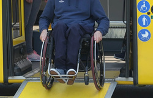

""To‘siqsiz muhit" milliy dasturi"
Jamoat transporti va binolar nogironligi bor shaxslar uchun 100% moslashtirilmoqda.
O‘zbekistonda 2026-yilga kelib "To‘siqsiz muhit" yaratish milliy dasturi o‘zining eng qizg‘in va hal qiluvchi bosqichiga qadam qo‘ydi. Bu jarayon shunchaki rampalar qurish emas, balki butun mamlakat infratuzilmasini nogironligi bor shaxslar, keksalar va harakati cheklangan insonlar uchun 100% moslashtirishni ko‘zda tutgan kompleks islohotdir. Hozirda transport tizimi va bino-inshootlar bo‘yicha amalga oshirilayotgan ishlar ko‘lami juda keng bo‘lib, 2026-yil 1-yanvardan boshlab butun respublika bo‘ylab "Interaktiv xarita" tizimi to‘liq ishga tushirildi. Bu xarita orqali har bir fuqaro qaysi bino, bekat yoki jamoat transporti nogironlar uchun moslashtirilganini real vaqt rejimida ko‘ra oladi.
Jamoat transporti sohasida inqilobiy o‘zgarishlar yuz bermoqda: yangi qabul qilingan qonun hujjatlariga ko‘ra, shahar yo‘lovchi tashish transporti subyektlari zimmasiga nogironligi bo‘lgan shaxslar uchun majburiy sharoitlar yaratish vazifasi yuklatildi. Bu faqat past polli avtobuslar bilan cheklanib qolmay, avtobus bekatlarini ham to‘liq modernizatsiya qilishni o‘z ichiga oladi. Har bir bekatda maxsus panduslar, tutqichlar va ko‘zi ojizlar uchun taktil yo‘lakchalar o‘rnatilmoqda. Eng muhimi, 2026-yildan boshlab transport vositalarining ichki qismi harakati cheklangan yo‘lovchilarning xavfsiz chiqib-tushishi uchun maxsus moslamalar bilan jihozlanishi qat’iy nazoratga olingan. Toshkent shahrida boshlangan "poytaxt namunasi" tajribasi endilikda barcha viloyat markazlariga yoyilmoqda.

Binolar va shaharsozlik masalasida ham talablar keskinlashgan. Endilikda har qanday yangi qurilayotgan yoki rekonstruksiya qilinayotgan bino loyihasi majburiy ekspertizadan o‘tkaziladi. Agar loyihada to‘siqsiz muhit talablari bajarilmagan bo‘lsa, qurilishga ruxsat berilmaydi. "Xavfsiz yo‘l va xavfsiz piyoda" jamg‘armasi mablag‘larining kamida 10 foizi bevosita chorrahalarni nogironlar uchun xavfsiz holatga keltirishga, ya’ni ovozli svetoforlar va qiyaliklarni to‘g‘rilashga sarflanmoqda. Shuningdek, 2026-yildan "Teng imkon – inklyuziv bandlik" loyihasi doirasida nogironligi bor shaxslarning ish joylari ham maxsus standartlar asosida moslashtirilmoqda, bu esa ularning nafaqat ko‘chada, balki ish joyida ham erkin harakatlanishini ta’minlaydi. Turistik ob’ektlar, muzeylar va mehmonxonalarda ham "To‘siqsiz turizm" standartlari joriy etilib, 8 mingdan ortiq madaniy meros ob’ektlariga kirish imkoniyatlari 100 foizga yetkazilmoqda. Bu islohotlarning barchasi O‘zbekistonni barcha uchun teng va qulay makonga aylantirishga xizmat qilmoqda.